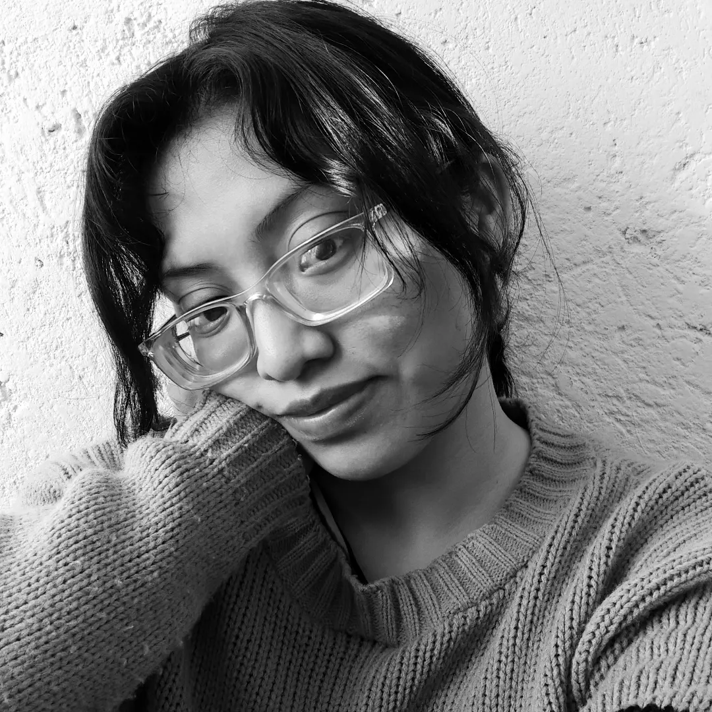

Martha Patricia Nepamuceno Ramirez
¡Hola! Soy Martha, tengo 25 años y soy estudiante de la licenciatura de diseño grafico en la Benemerita Universidad Autonoma de Puebla. Naci en Minatitlan, Veracruz. Creci y vivi hasta los 19 años en la ciudad de Jaltipan, Veracruz. Soy la hija menor en una familia de cinco integrantes. Soy la tia de 5 sobrinos que son hijos de mis hermanos mayores. Antes de estudiar diseño, estudie 1 año la carrera de ingenieria en electronica, pero decidi cambiarme y hacer lo que mas me gustaba, de igual forma tuve que mudarme de ciudad y me converti en una estudiante foranea. Actualmente vivo en un edificio donde conoci a mis amigas que igual son mis roomies, llevo viviendo con ellas cinco años.
Durante la carrera eh esperimentado muchas disciplinas, tanto practicas como teoricas. Me gusta la fotograafia, la ilustracion, el diseño editorial, el diseño web, el marketing, el diseño industrail y demas. Realmente aun no me decido por que disciplina me ire, por que de cierta forma me agradan todas, espero poder seguir desarrollandome profesionalmente y si estudiar una maestria.